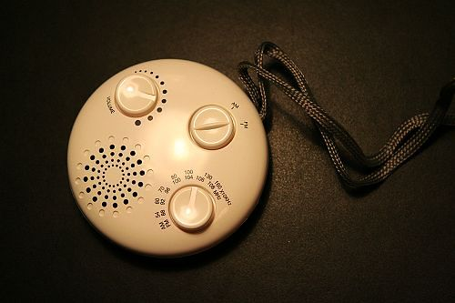

Shower Radio @ Dec 25, 2009
将近8点离开办公室，眉骨要裂开似的疼，内心烦躁，这样的状态不知会持续到何时，难道这就是今后工作的常态？一个人太想把所有工作都做得完满，就象要让所有人都开心一样不现实，甚至崩溃，不是吗？我用一周的时间喝完一瓶红酒，大惊喜小姐上周末还送了一瓶，明天等Sherry来，我们两就可以抱着这瓶红酒一解疲惫与烦忧，看上两部电影，过个放松的下午。
这一天让我感到安慰和快乐的是和Maggie、问问一起吃午饭，并且收到问问在HK购买的圣诞礼物：MUJI shower radio。Yeah！（咳咳，请各JM控制一下酸意）这下我真的可以在泡澡的时候听到音乐和新闻啦！以后无论何时何地都可以随身携带它，比如加班的周末，比如遛狗的路上，比如做饭的厨房，比如失眠的夜晚。。。随时随地。
我永远追赶不上文艺青年的脚步，连送礼物都无法比拟。但是这些都不重要，重要的是与她、她还有她们在一起度过的美好时光。祝我的女友们圣诞快乐，天天快乐！

还爱包装纸袋上健美的圣诞老头儿！瞧他那两只快站成“一”字的脚，一看就知道有芭蕾基础。

14 Responses to “Shower Radio”
2009-12-25
友情渐长,情谊无价~注意适时释放自己哟.
2009-12-25
哈哈~我知道你现在不是大惊喜，是大忽悠小姐啦，哈哈哈哈哈~太经典了！高手才能总结出这个名儿！
2009-12-25
我来这里倒酸水啦！哇哇！
2009-12-25
哎呀。。。嫉妒。。。美好的女友就是最好的解压良方～
2009-12-26
那人是倒酸水么？是呕吐物吧。。。
2009-12-26
那么请问这个shower radio 哪里有卖呢
2009-12-27
Health and family are always No.1. I don’t think friendship is that important in the USA. No friends can help you out if you loss a job, but they can do you some favor and color your life a little bit. FAMILY IS priority.
2009-12-27
我都忘了今年的圣诞节哦，茶美女还有礼物收。圣诞过的错哦。
2009-12-28
祝你圣诞快乐，新年快乐。我在我的浴室里放了个小音响，就可以放音乐，你的浴室那么漂亮，应该更可以弄得好了。我的目标是以后的浴室里装上电视，音响，贵妃蹋。呵呵，可以不用出来。
2009-12-28
很精致~~看得出是花了心思选的礼物~~羡慕
2009-12-28
最近也很喜欢MUJI家的东西呢
2009-12-28
能一边冲凉一边挂脖子上听么？要是能，我就忌妒：）
2009-12-29
能！但是坏了我不负责~~
2009-12-30
喝红酒看电影感觉非常非常好！看了两部电影，还是更喜欢喜剧片，喜欢轻松幽默的气氛，大家的话题也会变更多。茶的家很舒适，想赖着不走。。另，鸭爪子太好吃拉~~~难忘。。。
Leave A Reply
存档只读，评论已关闭。